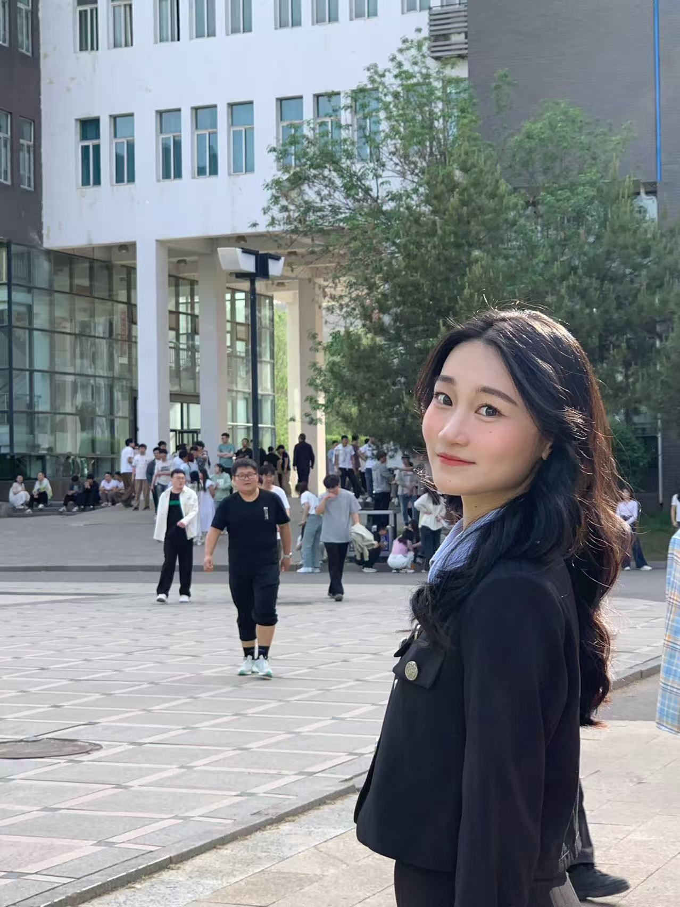

智慧交通 · 数据驱动未来
Deep Traffic Lab
交通大数据团队 · 百家讲座系列

第 002 期 · 考研
杜绮钰
主讲题目：考研经验分享
2025年毕业于吕梁学院计算机科学与技术系软件工程专业，2026年考研中国地质大学（武汉）电子信息专业
地点： 线上 (#腾讯会议：820-837-459)
时间： 2026年4月23日（周四） 19:30 – 21:30
访问交通大数据团队官网：https://qiaod.github.io/DTL

第 001 期 · 大学生学习与科研
吴亮
主讲题目：大学生学习与科研分享
北京大学在读博士
地点： 线上 (腾讯会议)
时间： 2025年12月02日 19:30 – 21:30
访问交通大数据团队官网：https://qiaod.github.io/DTL